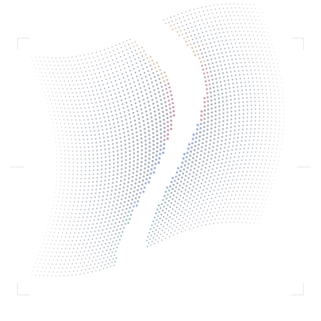

No es magia.
Es trabajo.
Y criterio.
JoyanNO FATE.
CONSTRUIR · OBSERVAR · RESPONDER
Y alguien tiene que construirlas con cuidado.
Un lugar para pensar, hacer y poner a prueba
lo que viene. Juntos.

01 / UNA FORMA DE HACER
Nos interesa lo que podemos construir juntos. Y también entender cómo funciona, qué decisiones toma y de qué tenemos que hacernos cargo.
Territorios por explorar, no un catálogo de servicios.
Elegir cómo y dónde pensar.
Poder seguir las decisiones.
Conocer y cuidar los límites.
02 / EL LENGUAJE FUERA DEL HERO
MATERIA / SEÑAL / CONTRAPUNTO
El color aparece.
No lo ocupa todo.
Grafito, hueso y luz localizada. El espectro vive en el pliegue, no detrás del texto.
Michroma / firma · sans del sistema / lectura
Composición tipográfica provisional, sin nuevas fuentes.